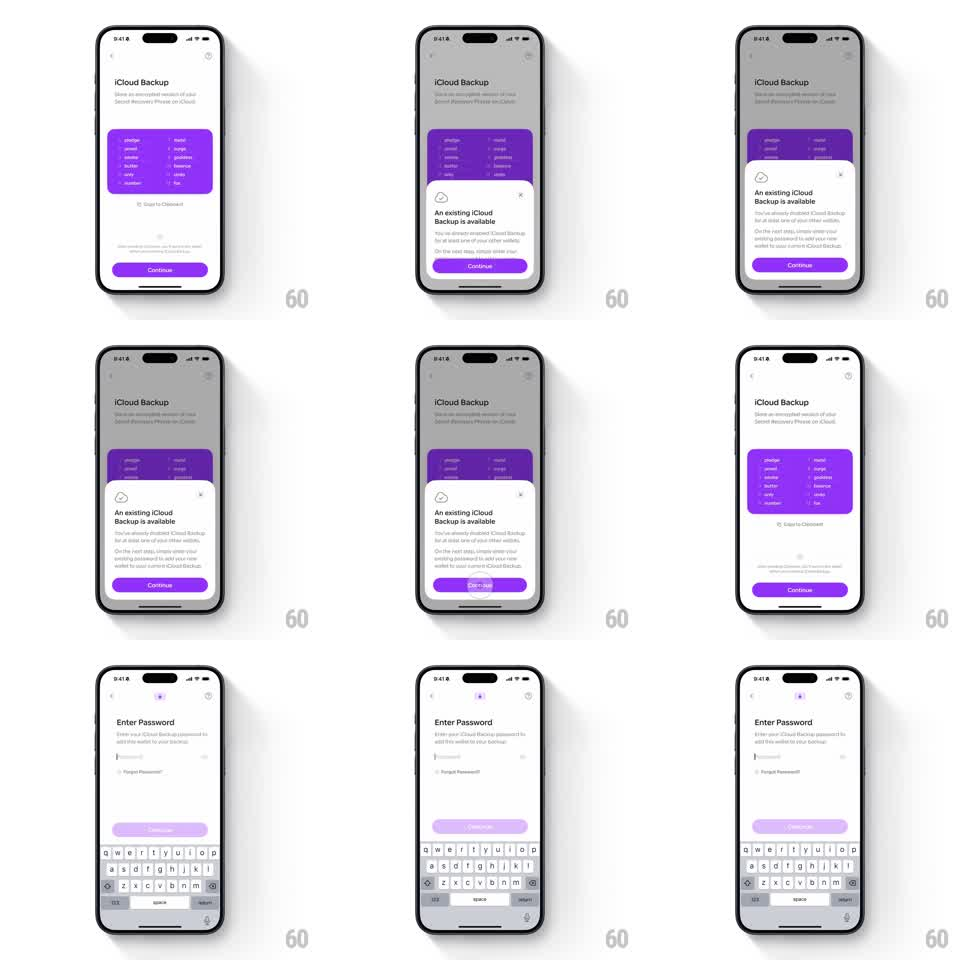

Media
Frame-by-frame

Rebuild this interaction 1:1: Family's iCloud backup transition - on the "iCloud Backup" screen with the purple recovery-phrase card, tapping Continue shrinks the background and card while a bottom sheet ("An existing iCloud Backup is available") rises; continuing again morphs the whole view into the "Enter Password" screen with the keyboard.

Rebuild this interaction 1:1: Family's iCloud backup transition - on the "iCloud Backup" screen with the purple recovery-phrase card, tapping Continue shrinks the background and card while a bottom sheet ("An existing iCloud Backup is available") rises; continuing again morphs the whole view into the "Enter Password" screen with the keyboard.
## Integration
Integration: stack-agnostic spec - springs given as stiffness/damping, timed motions as duration + curve; map every value to your framework and animation library of choice.
## Scene
Light "iCloud Backup" screen: subcopy, a purple card listing twelve recovery words in two columns, "Copy to Clipboard" link, purple "Continue" button. The sheet: cloud icon, "An existing iCloud Backup is available", explainer text, purple "Continue". Final: "Enter Password" screen - password field, "Forgot Password?" link, disabled Continue, keyboard raised.
## Motion spec
Pattern: scale-down background with sheet rise, then morph to password.
- Tap Continue: the backup screen scales down (1 -> 0.92, 250ms ease-out) and dims (scrim 40%) as the sheet slides up (spring ~300/20, small overshoot), its cloud icon popping in (scale 0.6 -> 1, spring ~340/14).
- Tap the sheet's Continue: the sheet slides down (200ms) while the backup screen scales further and slides up off (300ms ease-in), the password screen rising from below (spring ~300/18) with the keyboard (250ms).
- The purple card's color carries through: the password screen's Continue button starts disabled-lavender and saturates when input arrives.
- Back navigation reverses the morph (sheet/scale in reverse).
## Calibration
- The scale-down is the tactile cue that the screen is being set aside, not dismissed.
- The recovery phrase card stays legible at 0.92 scale - it is context, not decoration.
## Reduced motion
Screens crossfade (250ms) without scaling.
## Don't miss
- The sheet's cloud icon bounces once on arrival.
- The keyboard is already up when the password screen lands - no second delay.